부수고 터뜨리며 오늘의 마음을 비우고, 비워낸 자리엔 비전보드와 끌어당김 일기로 이루고 싶은 장면을 채워요. 기록은 전부 내 폰에만 남아요.
답답한 날엔 털어내는 쪽으로, 바라는 게 있는 날엔 끌어당기는 쪽으로.
말하기엔 사소하고 삼키기엔 무거운 하루. 소리까지 진짜 같은 방식으로 부수고, 터뜨리고, 숨을 고른 다음 한 줄로 남겨요.
비전보드에 꿈 사진을 붙이고, 이미 이룬 것처럼 한 줄 쓰고, 원하는 상태를 지도로 그려요. 붙여두고 잊어버리지 않게.
무엇 때문인지 고르면 그 상황에 잘 맞는 방식이 먼저 나와요. 고르기 귀찮은 날엔 직접 골라도 돼요.
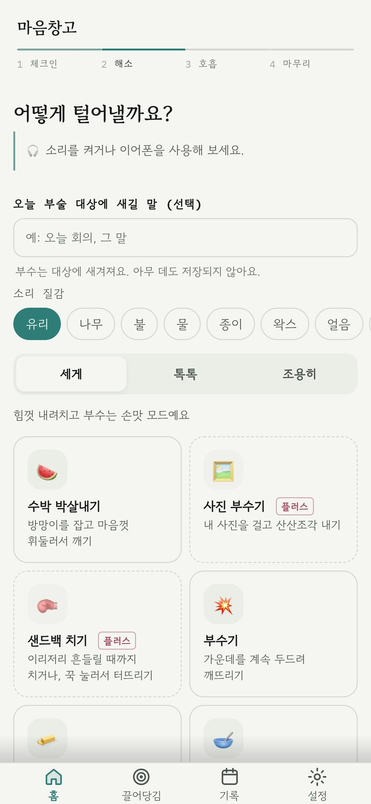
꿈 사진을 한가득 붙이고 매일 들여다보게 만들어요. 사진이 한 장씩 다가오는 음성 안내를 따라 그 장면 속으로 들어가 봐요.
밥 프록터가 종이에 그리던 그 방식 그대로예요. 막연한 '잘 되고 싶다'가 구체적인 하루의 모습으로 바뀌어요.
'~하고 싶다' 대신 '~했다'로. 하루 한 줄이면 충분해요. 끊기면 무너지는 연속 기록은 일부러 두지 않았어요.
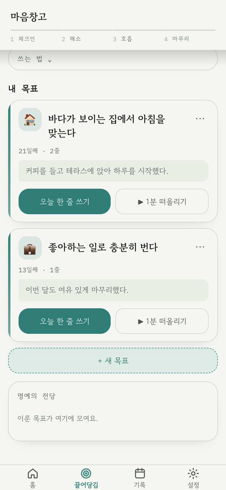
월별 그래프와 달력으로 마음의 흐름을 돌아봐요. 어떤 방식이 나한테 잘 들었는지도 알려줘요.
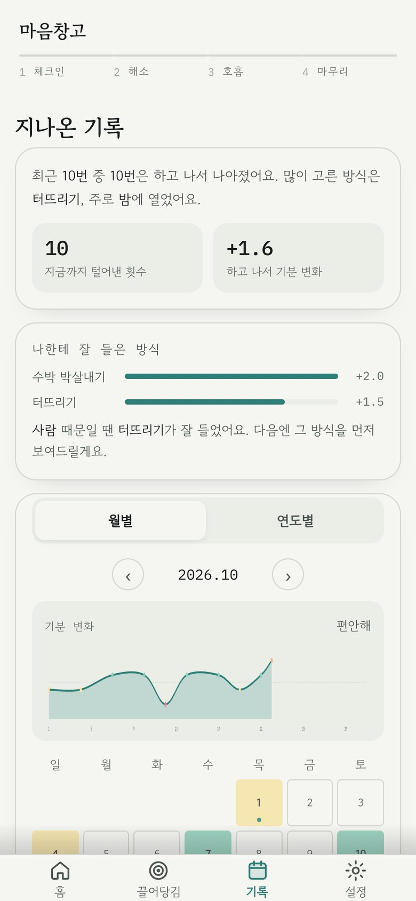
잠들기 전에 여는 일이 많으니까, 어두운 화면도 공들여 만들었어요.
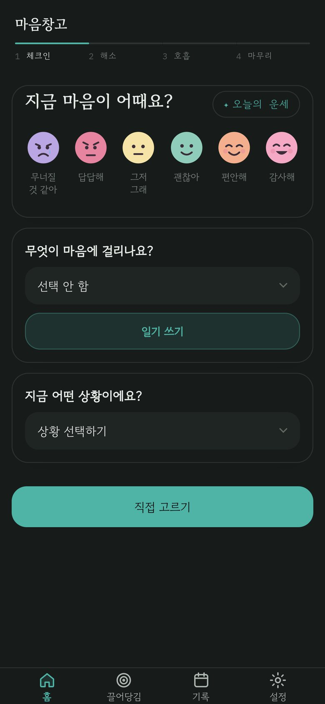
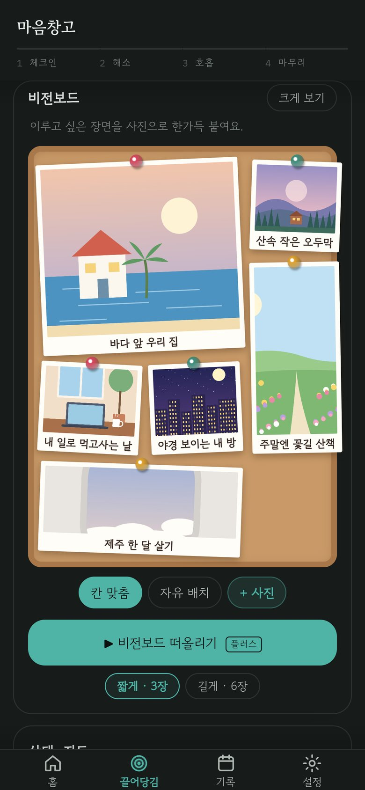
전부 실제 앱 화면이에요. 그날 기분에 맞게 바꿔 보세요.
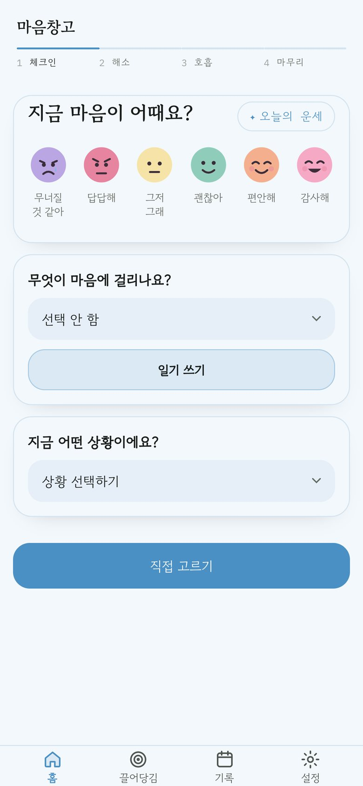
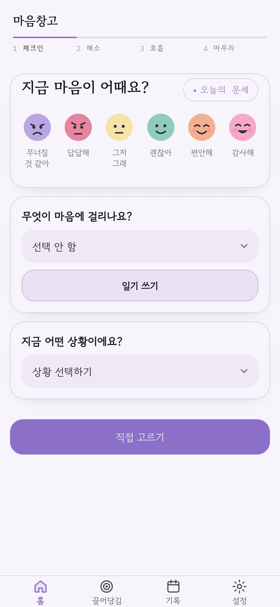
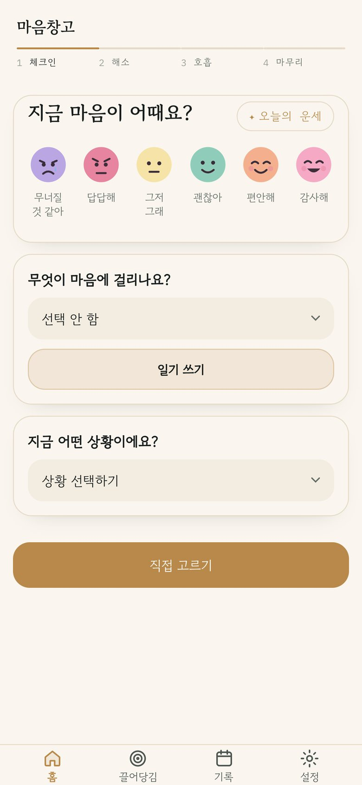
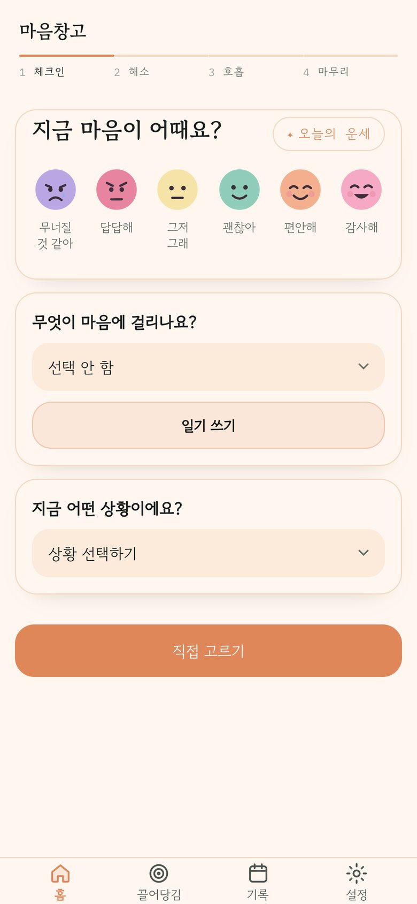
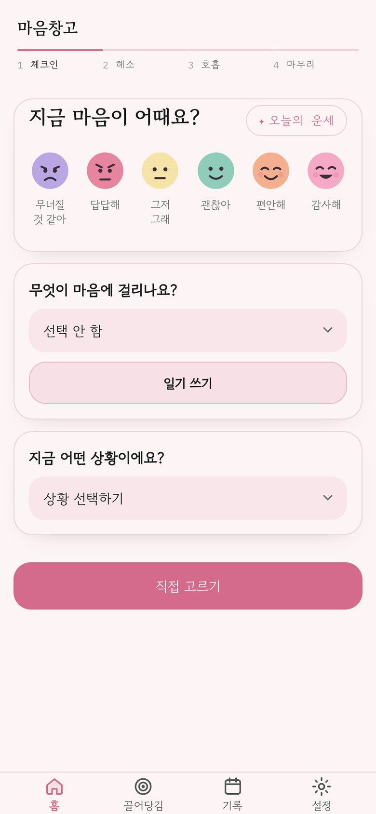
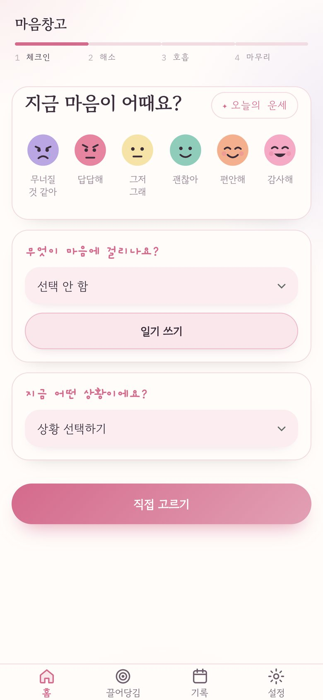
손글씨까지 고르고, 80%부터 160%까지 편하게
원할 때만 켜요. 억지로 오라고 조르지 않아요
네 자리 암호로 나만 보는 일기장
체크인 화면에서 살짝 열어보는 한 마디
매일 안 와도 괜찮은 앱이에요
한국어, English, 日本語 외 6개
계속 무료로 쓰는 것들
1 · 6 · 12개월 이용권
구독이 아니라 자동 결제가 없어요. 기간이 끝나면 그냥 멈춰요.
무료로 바로 시작할 수 있어요. 회원가입도 필요 없어요.
오늘도 수고했어요 ♡